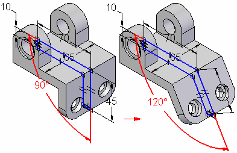

Profile-based ordered features
Many features use profiles to define the shape of material to be added to the part or removed from the part. Profile-based features are associative to their profiles; if you change a profile, the feature automatically updates.

You can draw the profile as part of the feature construction process, or select a profile from a sketch you drew earlier. You draw a profile or sketch on a reference plane. You can use one of the default or base reference planes, or you can define a new reference plane using a face on the model.
Solid Edge provides commands to add material and to remove material. For example, you can use the protrusion commands to add material by:
-
extruding a profile along a linear path,

-
revolving a profile about an axis,

-
sweeping a profile along a user-defined path,

-
or fitting through a series of profiles.

All of the protrusion commands can be used to construct a base feature.